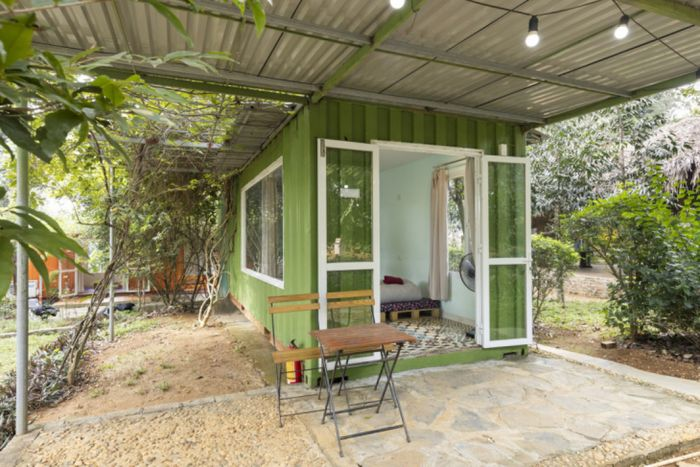

1. Vẻ đẹp của Sóc Sơn
Sóc Sơn, một huyện ngoại thành phía Bắc của Hà Nội, không chỉ nổi tiếng với sự gần gũi mà còn thu hút du khách bởi vẻ đẹp thiên nhiên đa dạng và những giá trị văn hóa, lịch sử đặc sắc. Vẻ đẹp của Sóc Sơn có thể được miêu tả qua nhiều khía cạnh
2. Thiên Nhiên Sơn Thủy Hữu Tình:
1. Thiên Nhiên Sơn Thủy Hữu Tình:
- Hồ Nước Thanh Bình: Sóc Sơn sở hữu nhiều hồ nước lớn nhỏ với cảnh quan thơ mộng, trong lành.
- Hồ Đồng Đò: Với diện tích rộng, bao quanh là rừng cây xanh mát, hồ Đồng Đò là điểm đến lý tưởng cho các hoạt động dã ngoại, cắm trại, câu cá, và chèo thuyền kayak. Không khí trong lành và cảnh quan yên bình mang lại cảm giác thư thái.
- Hồ Đồng Quan: Nằm gần Đền Gióng, hồ Đồng Quan cũng là một địa điểm đẹp để cắm trại, leo đồi và tận hưởng không khí mát mẻ.
- Hồ Chòm Núi (Hồ Hoa Sơn): Vẻ đẹp hoang sơ, yên tĩnh của hồ Chòm Núi thu hút những ai muốn tìm về với thiên nhiên.
- Hồ Núi Bàu: Nằm dưới chân núi Hàm Lợn, hồ Núi Bàu là một hồ nước lớn, trong xanh, ẩn mình giữa những đồi thông xanh mướt, tạo nên khung cảnh yên bình và thơ mộng.
2.Núi Rừng Hùng Vĩ:
- Núi Hàm Lợn: Được mệnh danh là "nóc nhà của thủ đô", núi Hàm Lợn với độ cao 462m mang đến cảnh quan hùng vĩ, là điểm đến yêu thích cho những người mê trekking, khám phá và cắm trại. Cảnh quan rừng thông bạt ngàn, hồ nước trong xanh dưới chân núi tạo nên một "Đà Lạt thu nhỏ" ngay gần Hà Nội.
- Núi Sóc: Là ngọn núi quan trọng trong văn hóa, núi Sóc gắn liền với di tích Đền Gióng và chùa Non Nước, mang vẻ đẹp trầm mặc, linh thiêng.
- Rừng Thông Sóc Sơn: Những cánh rừng thông xanh mướt trải dài tạo nên không khí trong lành, mát mẻ, là địa điểm lý tưởng cho các hoạt động picnic, dã ngoại.
3. Lưu trú
Ba Vì có nhiều homestay, resort đẹp. Một số homestay container, bungalow view núi được giới trẻ yêu thích.
4. Điểm tham quan nổi bật
4.1. Vườn Quốc Gia Ba Vì
Điểm du lịch sinh thái nổi tiếng với Nhà thờ đổ, Đền Thượng, Vườn xương rồng...
4.2. Thác Thiên Sơn – Suối Ngà
Khung cảnh thiên nhiên hùng vĩ, thác nước trắng xóa, thích hợp để nghỉ dưỡng cuối tuần.
5. Ẩm thực đặc sản
Đặc sản Ba Vì nổi bật với sữa tươi, sữa chua, gà đồi, lợn mán, cá suối và các món rau rừng.
6. Lưu ý khi đi Ba Vì
Nên chuẩn bị áo khoác, thuốc chống côn trùng, và đặt phòng homestay trước khi đi cuối tuần.